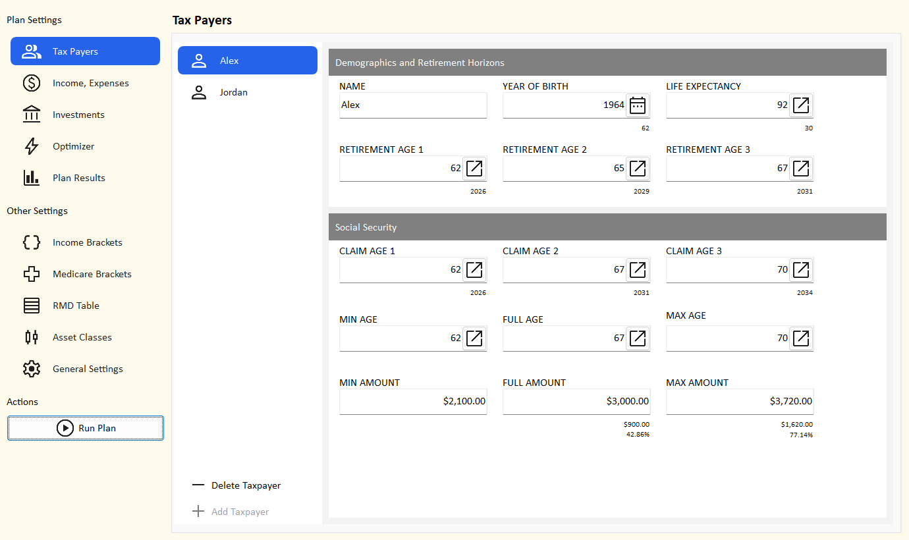

Tax Payers Built
A plan has one or two tax payers: you, and a spouse or partner if you file a joint return. Everything else in the plan - ages, retirement, Social Security, RMDs, Medicare, filing status - follows from this page.

The tax payer list
- The list shows one entry per tax payer, named after the tax payer. It updates as you type the name.
- Add Taxpayer adds the second tax payer (named "Taxpayer 2" until you rename it). It is turned off when there are already two.
- Delete Taxpayer deletes the tax payer shown, after you confirm. It is turned off when only one is left, because a plan needs at least one.
- With two tax payers the plan files married filing jointly; with one, single. In the projection, a surviving spouse files single from the year after the first death.
What deleting a tax payer changes
Their wages and pension income are deleted. Their accounts, and every joint account, move to the other tax payer, who
becomes tax payer 1. Income and expense dates that pointed at tax payer 2's milestones (for example
YORTP2) move to the matching tax payer 1 milestone.
Demographics and retirement horizons
| Field | What to enter | Shown under it |
|---|---|---|
| Name | Any name. It labels the list, results and drop-downs. A blank name shows as "Taxpayer 1" or "Taxpayer 2". | |
| Year of birth | Pick from 1900-2100. It sets ages, the full retirement age, the RMD start age and when Medicare starts. | Current age |
| Life expectancy | The age you plan to live to. The plan runs to the later life expectancy year of the two tax payers. | Plan horizon (years from now) |
| Retirement age 1, 2, 3 | Up to three ages to compare. Wages stop in the year you reach the retirement age; pensions start that year. | Retirement year |
Run Plan uses retirement age 1. The optimizer tries all three (repeated ages count once).
Choosing a life expectancy
Plan for a long life: running out of money at 92 is a bigger problem than leaving some behind. Many planners use 90-95.
The life expectancy year is also the
YODTP1 / YODTP2 milestone, the last year of that tax
payer's income and benefits.
Social Security
| Field | What to enter | Shown under it |
|---|---|---|
| Claim age 1, 2, 3 | Up to three ages to start benefits. Run Plan uses claim age 1; the optimizer tries all three. | Claim year |
| Min age, Full age, Max age | The earliest claim age (62), your full retirement age (66 or 67) and the age after which waiting stops increasing the benefit (70). Filled in from the year of birth. | |
| Min amount, Full amount, Max amount | Your monthly benefit in today's dollars if you claim at the min, full and max ages, from your Social Security statement. | Under Full and Max: the increase over the minimum, in dollars and percent |
For a claim age between these ages, the planner draws a straight line between the amounts. See Social Security for how benefits are adjusted, taxed and passed to a survivor.
New tax payer defaults
| Field | Default |
|---|---|
| Year of birth | 60 years before the current year |
| Life expectancy | 90 |
| Retirement ages | 62, 65, 67 |
| Claim ages | 62, full retirement age, 70 |
| Min / full / max ages | 62 / full retirement age (67 if born 1960 or later, otherwise 66) / 70 |
| Benefit amounts | $0 - enter your own |
Editing tips
- Ages and the year of birth are chosen with a picker: click the button at the right of the box. More about pickers.
- A change is kept as soon as you leave the details area or switch to the other tax payer, and it turns on the Save button.